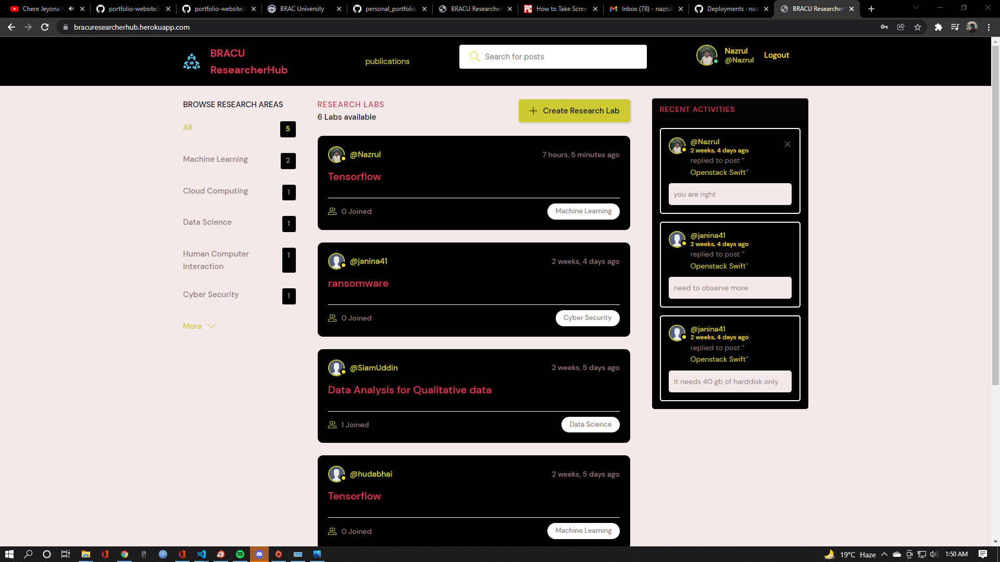
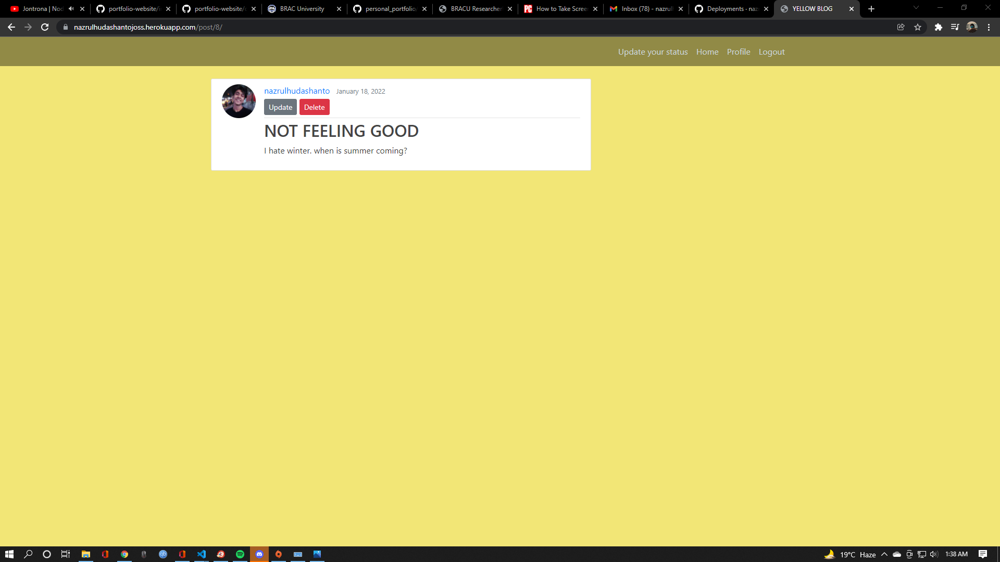
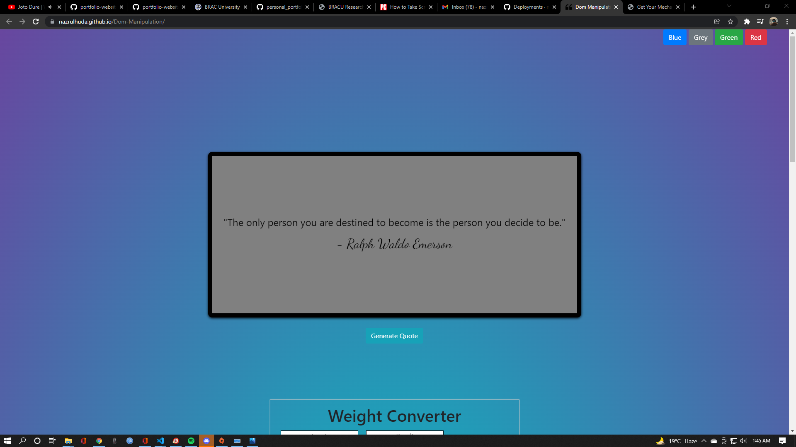

I was born and raised in Chittagong. Moved to Dhaka back in 2017. Currently pursuing my bachelors degree from BRAC University. I am in my last semester studying Computer Science. I like to try new things and take challenges as well. Psychology and philosophy interests me. I love reading historical figures and their findings. Half of my dopamine comes from making web apps and other half from trying new things and places

Social media app for bracu researchers. Researchers can open different research labs under separate research areas. Interested people can join and comment on the lab. It is an easy way to find your next research collaborator,
Keep your friends updated by sharing your thoughts on YellowBlog.


I am working as a Research Assistant under the supervision of Jannatun Noor miss, who is a Graduate Research Assistant at BUET and a lecturer in BRAC University (https://sites.google.com/site/jannatun0abigzero/home) currently I am working on three projects.